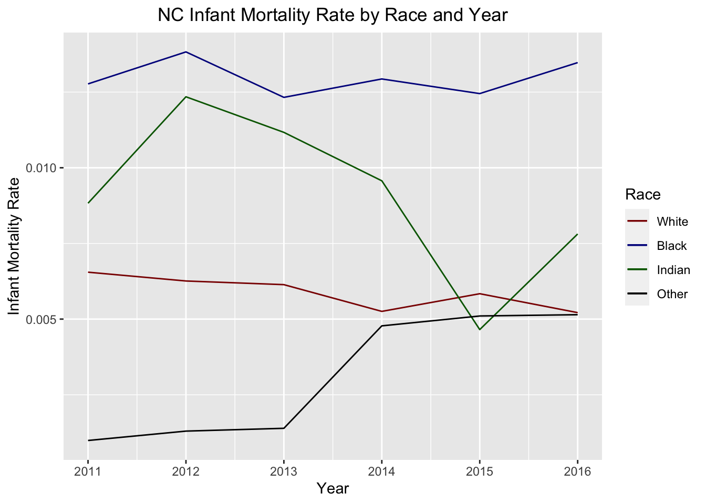
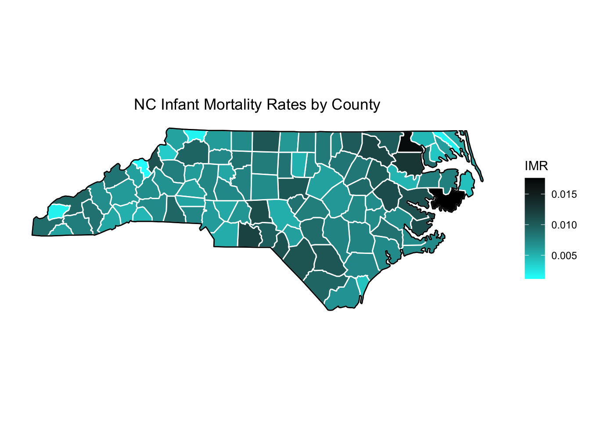

Analyzing Infant Mortality Rates by County, Race, and Income in North Carolina, 2011-2016
Published
March 7, 2023
Introduction
In November 2022, my friend gave me the datasets included in the “data” folder for this post as “Yr1116Birth.csv” and “Yr1116Death.csv” and told me to develop a model that predicts a county-by-county infant mortality rate based on various demographic features that were recorded in the data. The data lists births and deaths of infants in the years 2011-2016 in North Carolina by county of residence, race, and ethnicity of the mother. The Excel file Dataset Descriptions.xls lists all the information available in this dataset, and I presume that the information comes from the NC State Center for Vital Statistics. I’ve also supplemented the data with county-by-county income data which I found at datausa, though this data is also readily available from various public agencies like the Census Bureau. I use the data to compute infant mortality rates by county, race, and year. I used the 2011-2015 data to train my models and the 2016 data for validation.
This post is a write-up of my analysis of this data. This was an interesting task because it was a crash course in a few important data science skills: data wrangling, rare event modeling, and maps & data visualization.
Data wrangling
My data came from a number of different sources. There were separate birth and death data tables, the income data came from its own source, and the purely geographic data used to generate the map at the end of this post came from the mapdata package.
Combining these sources presented some difficulty. The birth and death data had different numerical codings for the race of the baby/mother, so I had to make a custom function collapse which collapsed the many extra race codings in the birth data into the simpler “other” category in the death data. In a similar vein, different sources encoded county information in different ways: North Carolina orders the counties from 1 to 100, but there is also a FIPS code which is more useful for national data, and of course the name of a county is a fine label for it. One defect in my data was that one of my sources mis-spelled “Tyrrell”, and it took me a while to detect this error.
Rare Event Modeling
When my friend presented me with this data, he and I discussed the interesting fact that some counties recorded no infant deaths for certain races in certain years. I don’t think that this was due to incomplete records or reporting anomalies: when I investigated these cases, I found that there were fewer than 100 births in the previous year in the same race and county. The overall infant mortality rate was about .7% in these years, so the expected number of infant deaths when there are fewer than 100 births is less than 1.
My friend raised the possibility that I could model this problem as a classification problem: given a partiular infant birth, predict the probability that it would die in the first year of its life. I considered this possibility, but decided not to do the analysis in this way, since the birth data contained more information, like the infant’s birth weight, that was not reflected in the death data, so I thought it might be hard to measure the effect of these additional variables on a given infant’s likelihood of death. So, instead I modeled the problem as a regression problem: predict a county’s infant mortality rate in a given county by year and race, given the county’s average values for the other predictors in the birth data (e.g., birth weight in grams, median income in the county, number of cigarettes smoked by the mother).
Nevertheless, the data still presented the challenges associated with classification problems in which the classes are very unbalanced in number. To get a feel for why there is an issue, let’s consider one of those counties where there were no infant deaths in a given year. Because infant mortality rates are on the order of 1/1000, to detect significant changes in rates between counties, it makes sense to measure them on a log scale. The counties where there were no infant deaths, we would record an infant mortality rate of 0, which would be (infinitely) many orders of magnitude smaller than the typical rate. To solve this, I added .001 to the infant mortality rates before taking the logarithm. This is sort of like label smoothing: I don’t want the model to make too much of those points where there happened to be no infant deaths.
One other thing I tried to do was to aggregate the counties into clusters and compute only in-cluster infant mortality rates for the training data. This was an attempt to reduce year-to-year variance due to small sample sizes. However, I found that my implementation of this idea didn’t really improve the validation-set error. So, in the end, I didn’t put this into practice. But, if you look at the code for this notebook, you’ll find relics of that approach.
Visualization and Maps
This project was a good way for me to practice what I had learned about making data visualizations from Introduction to Statistical Learning with R, including feature importance charts. But it was also an opportunity for me to learn how to make a county-by-county heat map; this map appears in the last section of this
Loading Packages and Cleaning Data
In this section, I clean the data and wrangle it into a form amenable to analysis. I omit most of this process from the presentation version of the notebook, but the interested readers can examine the code, which is available on my Github page.
The result of all these manipulations is a data frame brdrcounts which looks like this:
Most of the columns are explained in the file Dataset Descriptions.xls; “IMR” is the log of infant mortality rate, and “Cluster” is just a duplicate of “CORES” (it’s an artifact from when I tried to apply clustering to the data).
Trying Different Models
Now, we proceed to try different models on the test data. I think a bit of a warning is in order about concluding too much about variable importance, since we expect there to be significant collinearity between some of the predictors.
The first method we try is just a linear model; we perform subset selection by validation-set MSE.
The best model seems to associate a decline in infant mortality rate if the mother is American Indian or “Other” (not White, Black, or American Indian). It’s hard to understand the sign of the coefficients for “CIGPN” and “CIGFN”. My guess is that this has to do with the fact that I imputed a slightly lower-than-average infant mortality rate when the death count for a given county, race, and year is zero.
Regression tree:
tree(formula = IMR ~ . - CORES, data = train.data)
Variables actually used in tree construction:
[1] "RACE" "INCOME" "PLUR" "GEST" "CIGLN"
Number of terminal nodes: 6
Residual mean deviance: 0.3125 = 582.5 / 1864
Distribution of residuals:
Min. 1st Qu. Median Mean 3rd Qu. Max.
-2.33800 -0.15540 -0.08285 0.00000 0.14070 4.18600
The most notable differences in IMR come from GEST and RACE2.
Let’s do some tree pruning. The following graph shows that the minimum deviance is obtained via a tree with 6 nodes; however, there doesn’t seem to be much difference between a tree with 3 nodes and a tree with 6 nodes.
Method Test.Error
1 No Dependence on Predictors 0.6817740
2 Best Subset Linear Model 0.3456520
3 Simple Lasso 0.3640914
4 Lowest MSE Lasso 0.3462914
5 Simple Ridge 0.3660809
6 Lowest MSE Ridge 0.3466169
7 Tree 0.3436803
8 Pruned Tree 0.3643193
9 Random Forests 0.3240173
10 Boosting 0.4121946
Random forests seems to have done the best. This is consistent with its reputation as the best out-of-the-box method. Boosting is finnicky, and probably required some more hyperparameter tuning.
Graphs and Visualizations
This is a graph of infant mortality rates by race and year.

This is a heat map of North Carolina by infant mortality rate:

Conlcusion
It was interesting to go back to this project a few months after I first did it, because I noticed a lot of places where what I have learned in the interim could have come in handy. For example, I now have more robust EDA and feature engineering frameworks. Keep an eye out for a future blog post in which I discuss these issues in more depth in the context of my participation in recent Kaggle competitions.